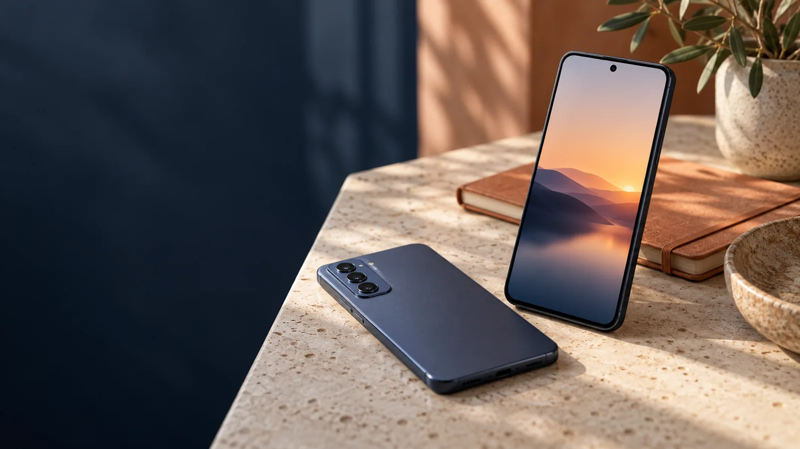
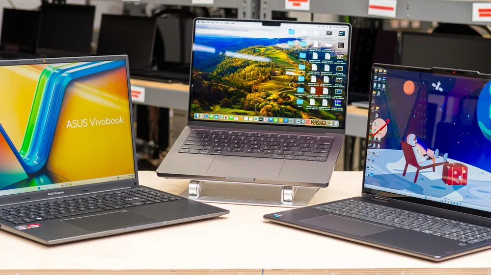
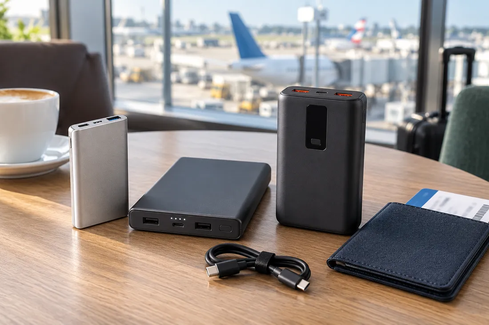
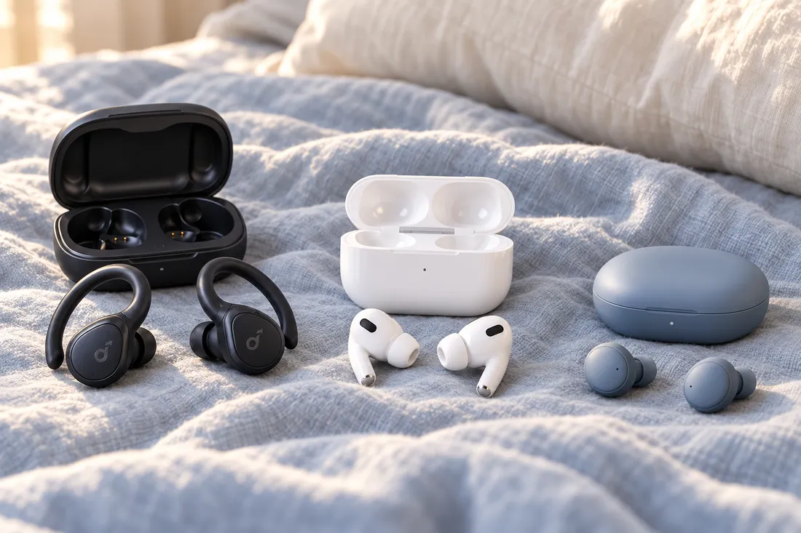
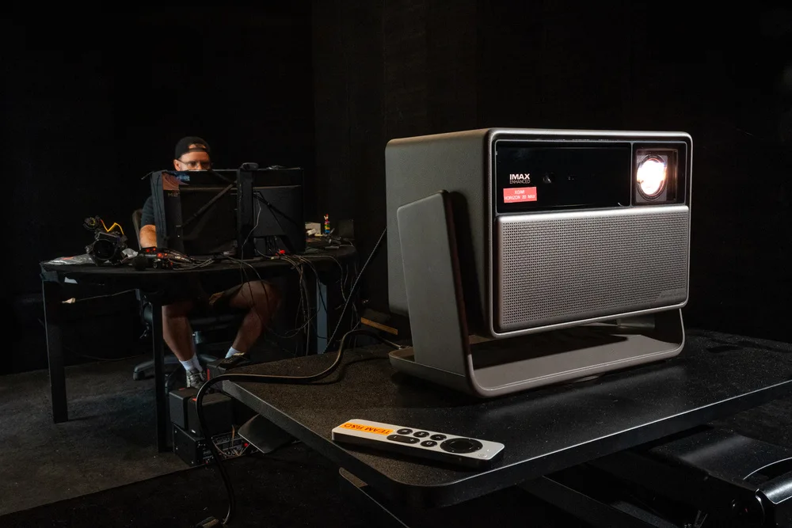

Vous jouez surtout à la maison
La puissance vous sert.
Une carte graphique dédiée peut faire la différence dans vos jeux. Le poids compte moins si le PC reste sur votre bureau.
Recherchez une caractéristique, un usage ou un modèle.
Un PC puissant peut être trop lourd pour vos cours. Un téléphone très bien noté peut décevoir en photo. Guide·Achat analyse le produit selon votre profil : ce qui vous convient, ce qui risque de vous limiter et pourquoi.
Analyse personnalisée pour les smartphones et les PC portables.
Ce qui change ici
Une note générale ne raconte pas votre journée. Ici, le produit est évalué à travers vos besoins. Prenez un PC de jeu puissant, mais lourd :
Vous jouez surtout à la maison
Une carte graphique dédiée peut faire la différence dans vos jeux. Le poids compte moins si le PC reste sur votre bureau.
Vous l’emportez en cours chaque jour
La même puissance peut être superflue pour vos notes et vos recherches. Le transport et l’autonomie deviennent vos premiers critères.
Exemple illustratif : l’analyse d’un modèle dépend de sa configuration et des données disponibles.
Trouver mon profil PC
Vous avez repéré un produit ?
Collez le lien de la fiche produit dans l’analyseur smartphone ou PC. Vérifiez la référence, renseignez votre profil, puis découvrez ses points forts et ses limites pour votre usage. Vous saurez sur quoi vous pouvez compter et ce qui mérite votre attention.
Analyser un smartphoneDeux variantes peuvent porter presque le même nom. L’identification du modèle précède l’analyse.
Vous pouvez consulter les sources. Si une information manque, elle reste à confirmer.
01 / Les guides
Choisissez votre équipement. Pour les smartphones et les PC, retrouvez l’analyse par profil ; les autres guides vous aident à préciser vos besoins et à comprendre les différences entre modèles.
Photo, jeux, travail ou journées loin d’une prise : découvrez ce qui compte pour votre téléphone.
Explorer le guide
02 / Travail & créationGuide disponibleDites-nous ce que vous faites, vos logiciels et votre budget pour trouver un PC adapté.
Explorer le guide
03 / En déplacementGuide disponibleRecharger votre téléphone ou votre ordinateur en voyage : la capacité ne suffit pas à choisir.
Explorer le guide
04 / Écoute & confortGuide disponibleAppels dans le bruit, sport ou musique au calme : vos habitudes font la différence.
Explorer le guide
05 / À la maisonGuide disponiblePartez de votre pièce, du recul disponible et de vos séances pour choisir votre image.
Explorer le guide04 / Notre méthode
Vous n’avez pas besoin de connaître les processeurs ou les normes USB. Commencez par ce que vous attendez de votre équipement.
Choisissez votre profil ou répondez aux questions du guide : vos usages et vos priorités donnent une direction à la recherche.
Analysez le modèle qui vous intéresse. Si vous hésitez encore, le guide vous aide à repérer les caractéristiques utiles à votre quotidien.
Voyez ce qui répond à vos besoins et les compromis à accepter. Vous pouvez alors décider si ce modèle mérite votre budget.
Si vous avez un smartphone ou un PC en vue, utilisez son analyseur. Sinon, choisissez une catégorie : le guide vous aide à préciser vos besoins avant de regarder les modèles.
Votre profil change l’importance des critères. Un PC destiné aux jeux et un PC à emporter en cours ne répondent pas aux mêmes besoins. Pour les smartphones et les PC portables, l’analyse relie les caractéristiques du modèle à votre usage ; elle explique ses conclusions et les limites des données disponibles.
Les prix sont indicatifs. Vérifiez le montant final, la référence, la variante et les accessoires auprès du vendeur avant l’achat.
Elle reste indiquée comme inconnue ou à confirmer. Une absence d’information ne devient pas automatiquement un défaut du produit.